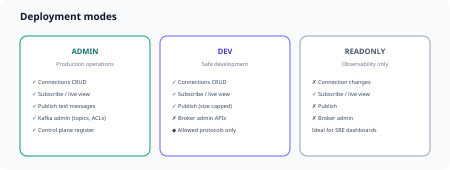

Configuration
application.yml, environment variables, Helm values, Maven profiles, and deployment modes.

Core properties
eventore:
deployment-mode: ADMIN # ADMIN | DEV | READONLY
enabled-protocols: # optional comma list; empty = all on classpath
control-plane:
auto-register-on-startup: true
data-plane:
require-control-plane-registration: true
dev:
allowed-protocols: # DEV only: subset of registered protocols
- KAFKA
- KINESIS
max-publish-bytes: 65536Deployment modes
| Mode | Connections | Subscribe / live | Publish | Broker admin |
|---|---|---|---|---|
ADMIN | CRUD | Yes | Yes | Yes (Kafka topics, ACLs, …) |
DEV | CRUD | Yes | Yes (size capped) | No |
READONLY | Read-only | Yes | No | No |
In DEV, only protocols listed under eventore.dev.allowed-protocols are accepted, intersected with control-plane registration.
Enabled protocols (runtime)
Limits which providers bootstrap registers and which appear in GET /api/v1/config → supportedProtocols.
# Environment
EVENTORE_ENABLED_PROTOCOLS=KAFKA,KINESIS
# Spring
eventore.enabled-protocols=KAFKA,KINESISValid values: KAFKA, PULSAR, RABBITMQ, MQTT, JMS, KINESIS, GCP_PUBSUB, AZURE_SERVICEBUS.
Maven profiles (build time)
| Profile | Providers on classpath |
|---|---|
providers-all (default) | All eight modules |
kafka-kinesis | Kafka + Kinesis |
provider-kafka | Kafka only |
provider-kinesis | Kinesis only |
mvn -DskipTests -Pkafka-kinesis -P!providers-all packagePair with Spring profile kafka-kinesis in application-kafka-kinesis.yml for defaults.
Helm: stream providers
Required list eventore.streamProviders drives runtime enabled-protocols, DEV allowed protocols, and the backend image tag. See published artifacts.
eventore:
streamProviders:
- KAFKA
- KINESIS
deploymentMode: ADMINImage tag auto-derived: kafka-kinesis. Eight providers → tag all.
helm install eventore ./deploy/helm/eventore \
-f deploy/helm/eventore/values-kafka-kinesis.yamlCustom Docker build:
docker build -f docker/Dockerfile.backend \
--build-arg EVENTORE_STREAM_PROFILES=provider-kafka,provider-kinesis .Control plane API
# Snapshot (revision, providers, UI cascade)
GET /api/v1/control/plane
# Register at runtime (ADMIN)
POST /api/v1/control/providers/KAFKA/register
# Deregister
DELETE /api/v1/control/providers/MQTT/registerEmbedded in config for the UI:
GET /api/v1/config
# → controlPlane.uiCascade.connectionProtocols
# → controlPlane.uiCascade.inspectProtocols
# → controlPlane.uiCascade.adminProtocolsOpenAPI catalog
Active stream contracts for this deployment:
GET /api/v1/openapi/catalogPer-stream YAML is served under /openapi/streams/{id}-api.yaml when that provider is registered.
Related: Control & data plane · Deployment